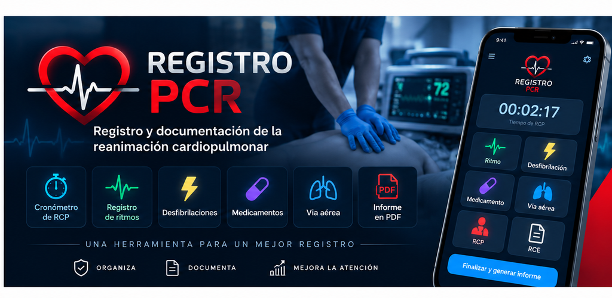

Registro PCR
Registro y documentación cronológica de eventos durante una reanimación cardiopulmonar.

Registro organizado.
La aplicación reúne los eventos registrados en una línea de tiempo y permite generar un informe PDF.
Cronómetro y registro de ciclos.
Referencia sonora para compresiones.
Registro cronológico de ritmos.
Registro de eventos de desfibrilación.
Registro de medicamentos administrados.
Registro del manejo de la vía aérea.
Registro del retorno de la circulación espontánea.
Visualización cronológica de eventos.
Generación y guardado del informe.
Herramienta de registro.
Registro PCR es una herramienta de registro y documentación. No es un dispositivo médico y no sustituye los protocolos institucionales, las guías clínicas, la capacitación profesional ni el criterio de los profesionales de la salud. No está destinada a diagnosticar, tratar, curar o prevenir enfermedades.
La descarga desde fuera de Google Play puede requerir que Android permita la instalación de aplicaciones desde la fuente correspondiente.